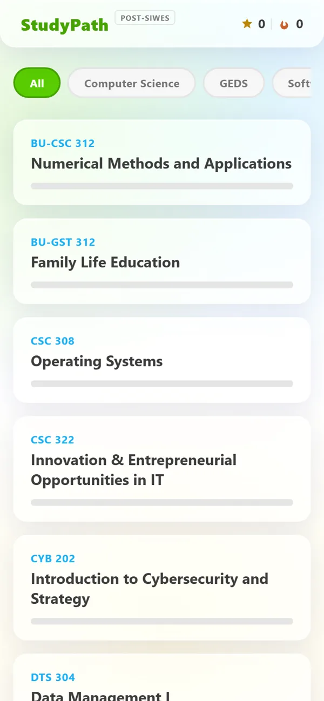
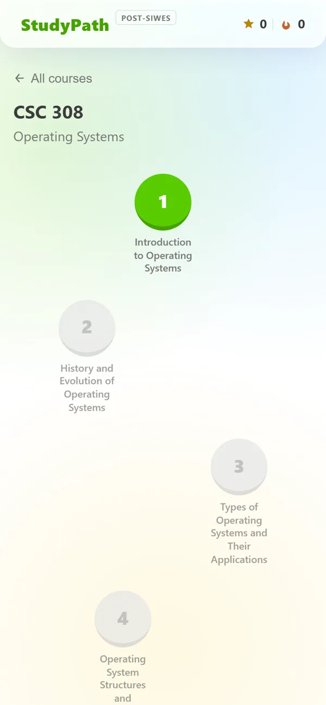
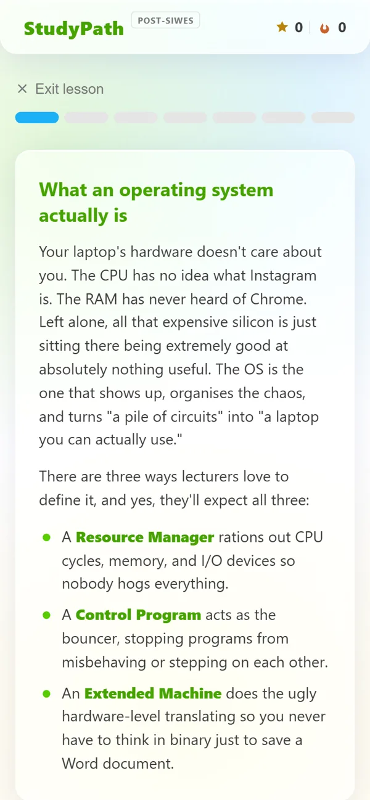

StudyPath
A Duolingo-style study app for university courses. The MVP was tested at Babcock; the full product is in development for web, Android and iOS.

StudyPath turns university course material into short lessons on a Duolingo-style path, with XP, streaks and practice questions. I built the first version as an MVP during the post-SIWES semester (July and August 2026) and tested it with a group of students at Babcock, covering nine courses.
The full product is now in development at studypath.ng: one Expo codebase for the web, Android and iOS, a Django backend, accounts, friends, leagues, a mascot and avatars. It isn't live yet.
- MVP: nine courses, each with a chapter map, lessons, quizzes, theory and fill-in-the-blank questions, XP and day streaks, and a Review Mistakes mode.
- An endless practice mode for calculation topics, where each question is generated and the answer worked out from the formula.
- Course content comes from the lecturers' slides: python-pptx pulls text from decks, and scanned PDFs go through Tesseract OCR with PyMuPDF.
- Full product: React Native with Expo (Expo Router) for web, Android and iOS from one codebase, built and shipped with EAS.
- Backend: Django, DRF and Channels with PostgreSQL and Redis, plus light, dark and system themes and local-language support planned.



RentNest
A rental app for Nigeria: map search, landlord chat, inspections, applications and leases.